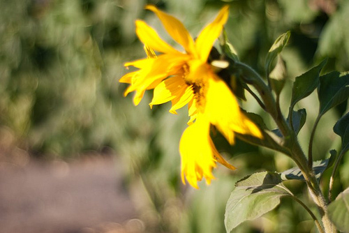

Welcome note
This is the website for a project on Northwest Caucasian languages: Adyghe, Kabardian, Abkhaz, and extinct Ubykh, see e.g. the
Ethnologue family tree.
The project as it exists now emerged from the summer fieldtrips of the
Russian State University for the Humanities, Moscow and most of the
research team are, or were at some point, affiliated with this
institutions. Welcome, and let us know if you have any questions or
considerations.